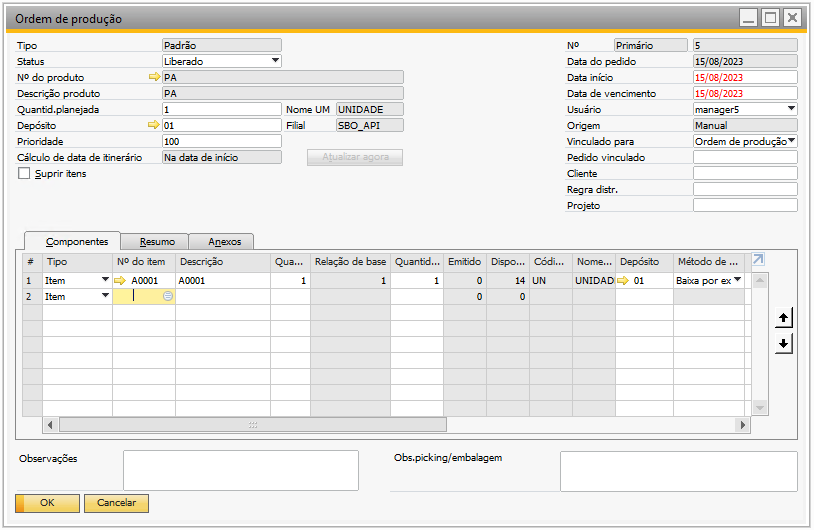
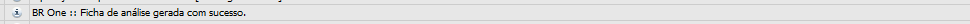
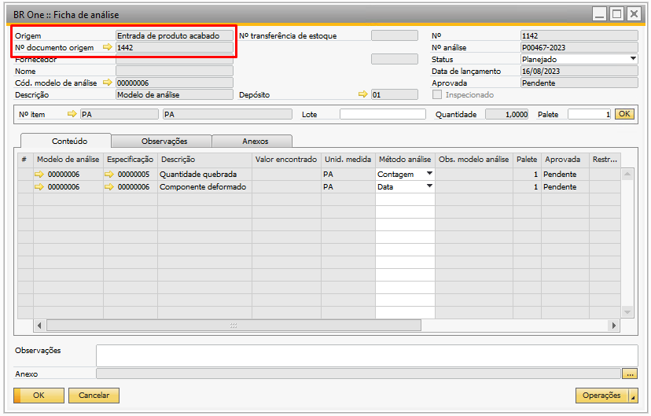

Criação de Ficha de Análise automática na Entrada de PA
Ao marcar a flag ‘Criar ficha de análise automaticamente’ e escolher o momento da geração como ‘Entrada de PA’, a ficha de análise será gerada automaticamente para o ‘Nº do produto’ que possua ‘Modelo de Análise’ configurado.
{kind=link}
No exemplo da Entrada de PA para a OP nº 05, o item do cabeçalho ‘PA’ possui um ‘Modelo de análise’ configurado, portanto, ao ao realizar a entrada de PA, a ficha de análise será gerada automáticamente.
{kind=link}

Ao adicionar a entrada de PA, no rodapé do SAP, será alertado as mensagens abaixo:

BR One :: Gerando ficha(s) de análise. Aguarde…
{kind=link}
BR One :: Ficha(s) de análise gerada com sucesso.
Ficha de análise gerada automaticamente no momento da entrada de PA:
{kind=link}
Caso o ‘Nº do produto’ não possua ‘Modelo de Análise’ configurado, ao realizar a entrada de PA o addon irá retornar a mensagem abaixo e não irá gerar a ficha de análise.

BR One :: Não há necessidade de gerar ficha(s) de análise, pois não há nenhum item com modelo de análise preenchido.